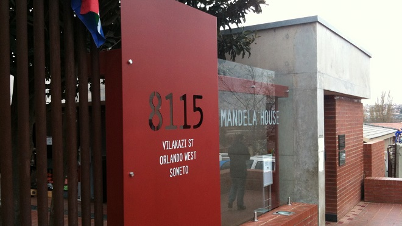
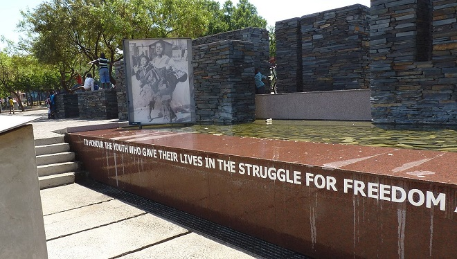
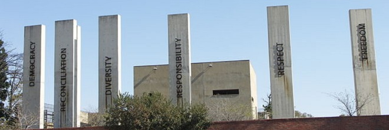

Colin Hloniphani Moyo
City
Known as the Venice of the North, Amsterdam is a wonderful place, it’s a beautiful city with an amazing history and tons of culture. Canals permeate the city creating an amazingly calm and
relaxed atmosphere wherever you are in Amsterdam. It’s easy to hire a boat and drift around the city, seeing the sights or simply sit in a cafe and watch the river traffic go by.
There are many reasons to visit the Dutch capital: delicious stroopwafel, historic 16th century architecture, and romantic canals.
Amsterdam is museum nirvana! Three of the city's famous temples of art lie within the Museum District, while many others are spread out all over.
Amsterdam is drenched in history so it’s no surprise that you’ll find some of the best museums and galleries in Europe here, including the famous Rijksmuseum and Van Gogh Museum in Museum Square.
Containing over 200 paintings, 500 drawings and letters from Van Gogh,
it’s the largest collection of the artist’s work in the world. Beer lovers won’t be disappointed with the Netherlands, which happens to be the world’s largest exporter of beer.
Foreign Languages
A foreign language I would like to learn is Dutch
| English | Dutch |
|---|---|
| Good Morning | Goedemorgen |
| Thank you very much | Hartelijk bedankt |
| You're welcome (don't mention it) | Graag gedaan |
| I'm sorry / Excuse me | Sorry |
| What a pity! | Wat jammer! |
| What is this / that? | Wat is dit / dat? |
Favourite Subjects


Historical Places in Johannesburg
President Nelson Mandela was one of the most influential politicians to have ever graced the planet. The Nelson Mandela National Museum, also known as Mandela House, was conceived to serve as a constant reminder of his name, memory, spirit and legacy. This is the house in which our late president lived from 1946 to 1962, offering visitors insight into the life of Madiba's days spent living in Soweto. Mandela House strives to be a world-class attraction as well as a leading centre for the preservation of the history and heritage of the Mandela family.
In tribute to and memory of Hector Pieterson and those who gave their lives in the struggle for freedom during the 1976 Student Uprising in Soweto, this museum is a symbol of the youth's resistance to Apartheid. The museum houses disturbing evidence in the form of verbal testimonials, pictures, audiovisual displays as well as documents that are related to the events of that day. The sights and sounds and atmosphere will, in fact, have you feeling as though you are right in the middle of the uprising and bloody aftermath.
The Apartheid Museum holds the damning evidence of the darkest era in our history. If you’re looking to understand and experience what it was really like to be a person of colour during that time, a visit to the Apartheid Museum is a must. Expect to see exhibits including photographs, film footage, text panels, artifacts and, of course, heart rendering stories that expose the atrocities committed during apartheid. Now, the museum stands as a beacon of hope for all mankind.
